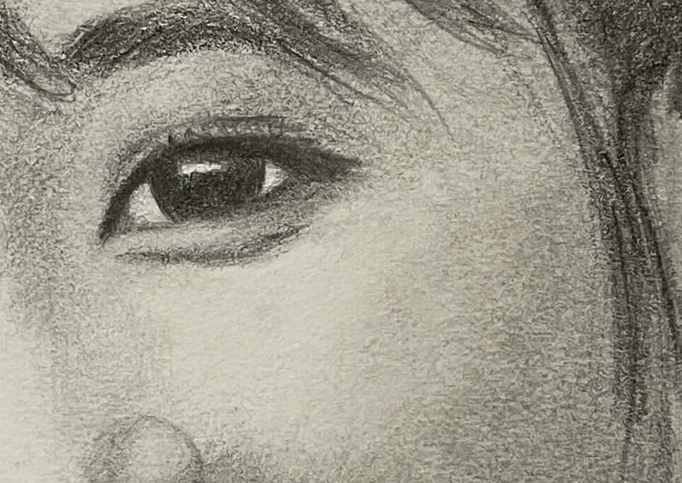
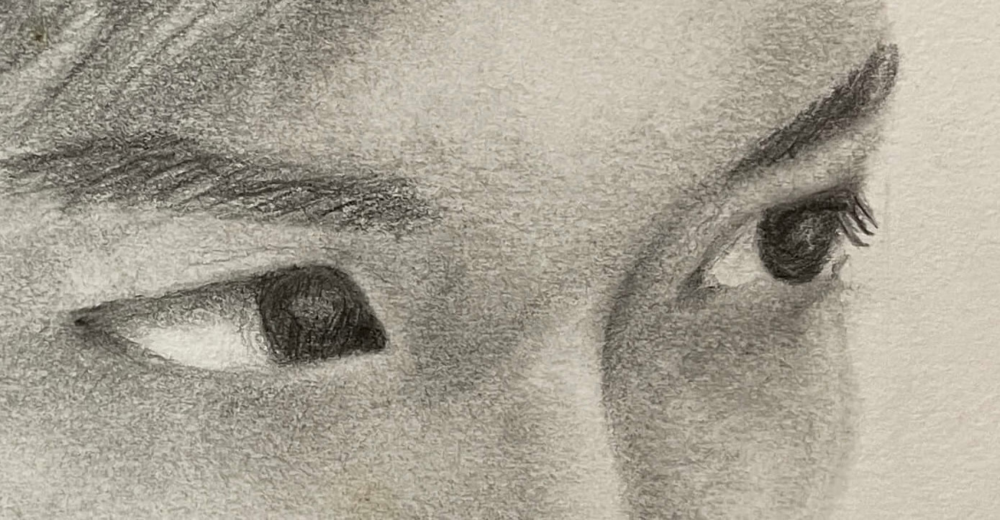
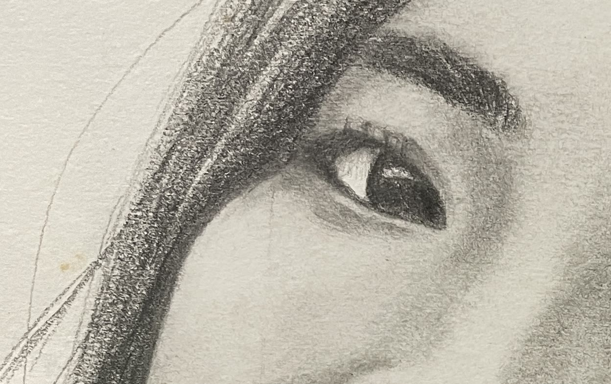
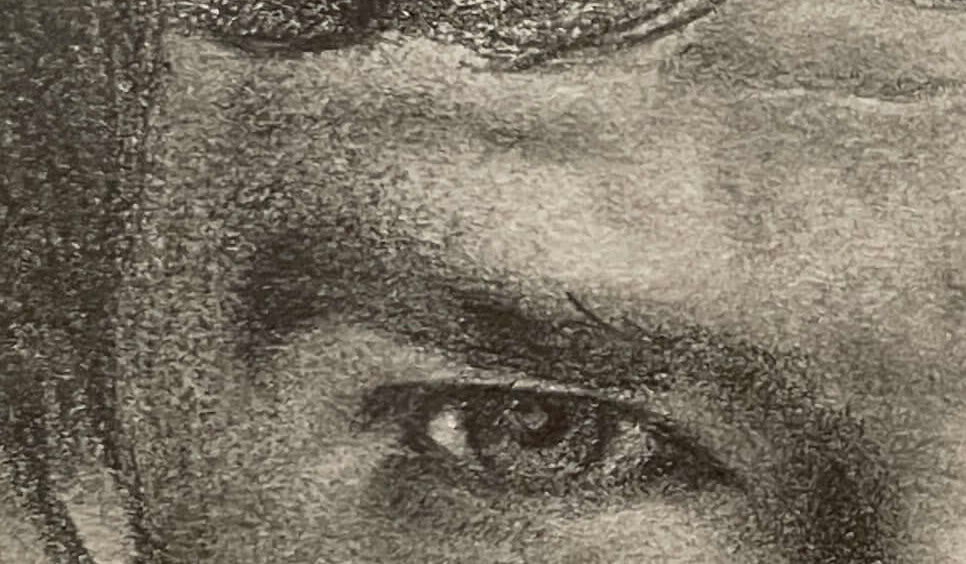
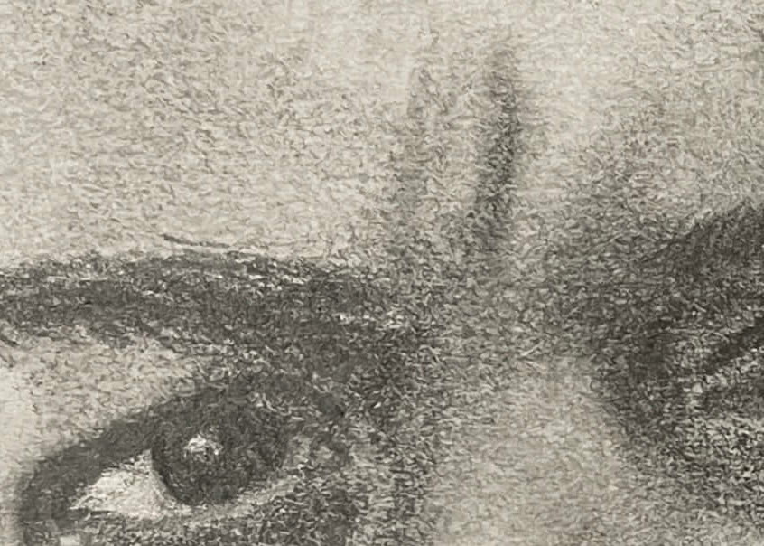

Learn to draw eyes by seeing the shapes first.
Don’t try to finish this perfectly in one sitting. Use it as practice.
The important part isn’t producing one perfect eye. It’s training your brain to notice these things without needing someone to point them out.

A finished eye from one of my portraits.
Most “detail problems” actually started here. Get this right before the iris, lashes or shading.
Is one corner higher than the other? Draw what you see, not the symbol of an eye.
Look for the straight and angled lines hidden inside the curves. Don’t make it beautiful yet.
Compare width, height and the corners. Small differences matter a lot in a portrait.
Practice: copy the tilt and the polygon of this eye, then check the width against the height.

Only add these after the outside structure feels right. Structure first. Detail last.
Don’t draw a full circle floating inside the eye. The lids overlap the iris.
The lid isn’t just another line. Notice distance to the crease, and how age changes the folds.
Some edges are sharp. Most are softer than you think. Lashes come last.
Practice: place the iris under the lids, then add the crease. Leave lashes until the end.
Print this page and draw over the light image first. Then try the same eye in the empty box without tracing.



Pick a photo. Before you draw, ask: what is the tilt? What polygon is hiding in the curve? How much of the iris is actually visible?
If this way of looking helped something click, I go much deeper into the rest of the face in PlayingWithPencil: The Portrait Sketching Masterclass — learn.playingwithpencil.art/beg-course
I’m Jeff. Portrait drawing isn’t simply talent. A lot of it is learning how to observe — then practising that process until it becomes instinctive.